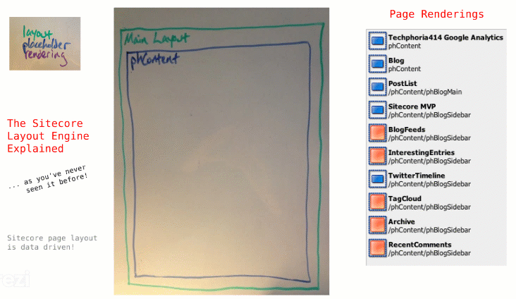
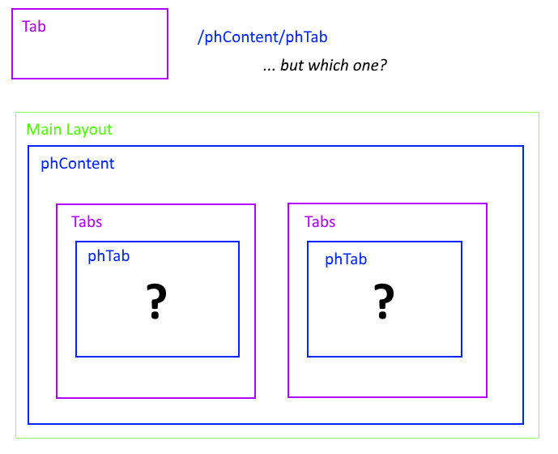
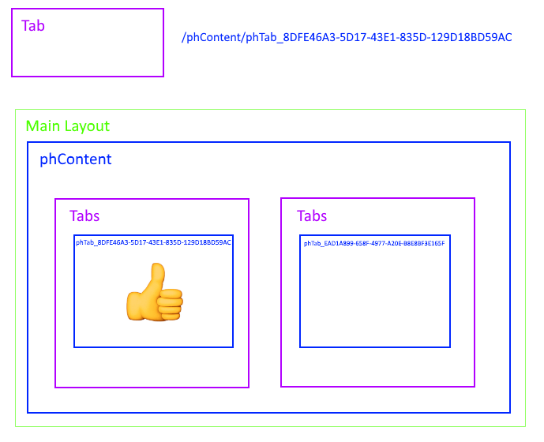

Sitecore dynamic placeholders and JSS
Overview of how JSS addresses the challenges of Sitecore dynamic placeholders
JSS takes advantage of dynamic placeholders to drive layout and content dynamically in JSS applications.
A central part of Sitecore architecture is a data-driven page layout based on addressing the location of components using placeholder keys.
Components define their available placeholders in their code/markup and are placed according to their defined placeholder on the page. Placeholder addresses are usually fully qualified paths, meaning they contain the entire hierarchy of placeholders delimited with a forward slash ('/'), much like a URL path.
The following animation shows how the Sitecore layout engine composes page layouts.
|  |
The shortcomings of this system become apparent when you attempt to place the same component more than once at the same placeholder address.
In the following example layout, it is unclear which Tabs component the Tab should be placed in when given the placeholder path /phContent/phTab. Out of the box, Sitecore puts a Tab component in the first Tabs container.
|  |
To solve this problem, placeholder keys must be dynamic. Some possible approaches are:
Attach an index to the placeholder key based on the position of the component. For example,
/phContent/phTab_1.Utilize the unique identifier (UID) given by Sitecore to a component when it is placed on a page. For example,
/phContent/phTab_8DFE46A3-5D17-43E1-835D-129D18BD59AC.Some combination of the previous approaches.
The UID approach is the most resilient for scenarios such as moving components in advanced Sitecore Editors such as Experience Editor and Pages.
|  |
Dynamic placeholders in Sitecore JSS
Using Sitecore dynamic placeholders with JSS presents some challenges:
The application must be capable of rendering without Sitecore, and it does not have access to rendering UIDs before importing the application and its components into Sitecore.
Developers are structuring component layouts with JavaScript objects and do not want to consider whether their particular layout would be affected by the shortcomings of the Sitecore layout engine.
Similarly, when adding a Placeholder to a component, the developer does not want to consider whether the placeholder must be dynamic.
To overcome these challenges, Sitecore JSS made the following design decisions:
Utilize a tree/nested route layout structure instead of addressing components on a page. Route data consumed by JSS must place child components within the placeholders collection itself, so there is no ambiguity about where to place the component in the layout.
In disconnected mode, this is simply the route data structure, as created by the developer.
In connected mode, the layout data from Sitecore, containing dynamic placeholder keys, is converted into a nested structure before rendering.
When importing components and route data into Sitecore, assume all placeholders are dynamic, except the immediate children of the root placeholder.
Utilize a dynamic placeholder format that includes the rendering UID.
Generate the rendering UID when creating the manifest before a Sitecore import. This strategy ultimately allows more flexibility in the dynamic placeholder format if required.